Dnešní balíček:
Načítám...

Počet TK tento týden:
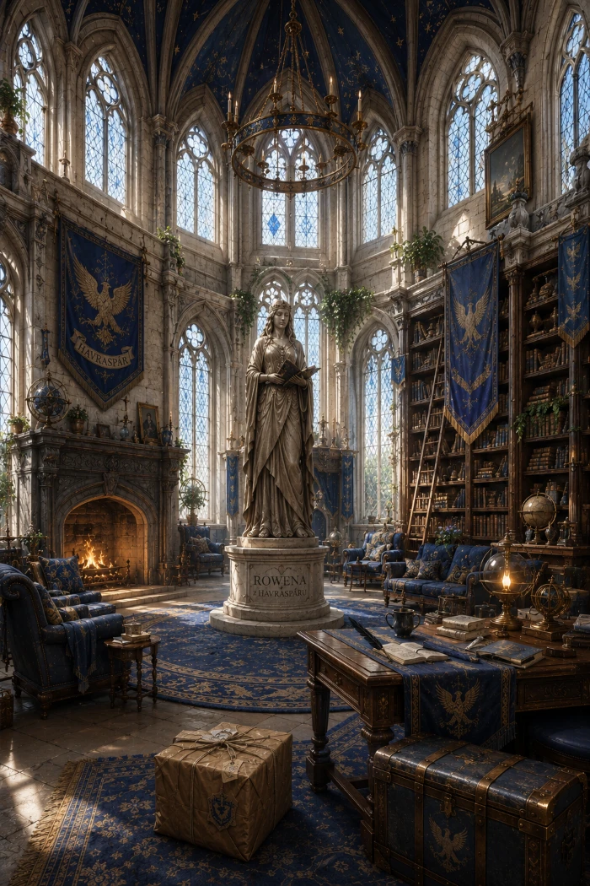

*Orel uznale pokývne hlavou a dveře se s hlasitým cvaknutím otevřou. Vstoupíš do trezoru.*
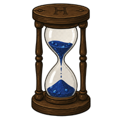
Zde vidíš přehled všech safírů, které se ti podařilo získat. Co teď? Pošli některému z Péček sovu, aby ti je vyměnili za předměty z Příčné ulice či Prasinek! Hodnota jednoho safíru jsou 2 galeony.
| Student | Safíry | Galeony |
|---|---|---|
| Načítám poklad z trezoru... | ||
Pozvánky, novinky a oznámení pro studenty:
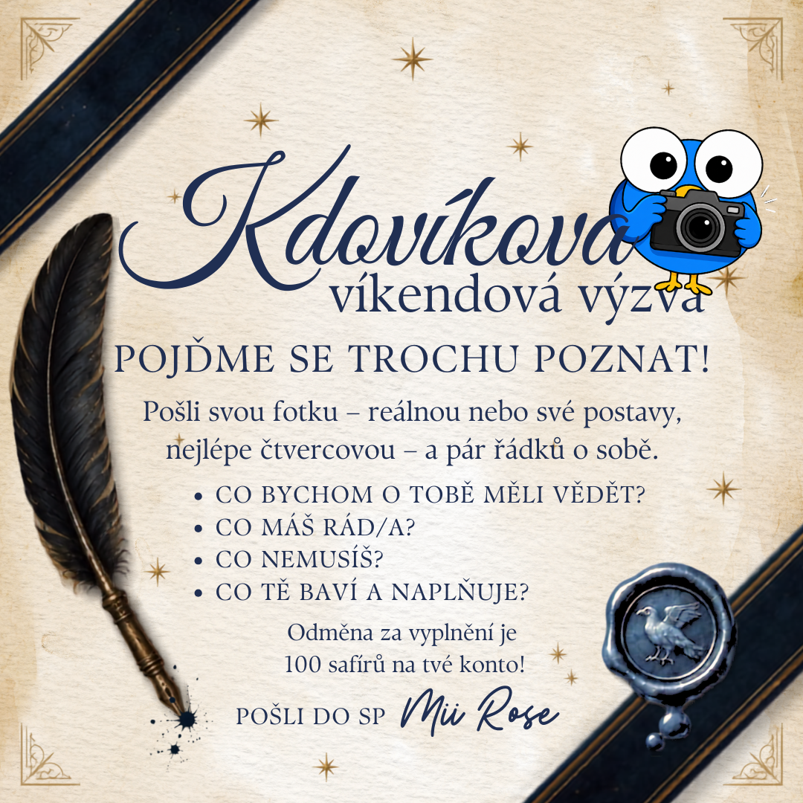
| Obrázek | Zkrácené ID | Obsah | Vložil |
|---|

Socha Roweny z Havraspáru po staletí střeží kolejní věž. Občas ožije a podělí se se studenty o svou moudrost.
Načítám dnešní moudrost...
Zde odpočívají a na pořádek dohlížejí funkcionáři naší koleje pro tento rok:


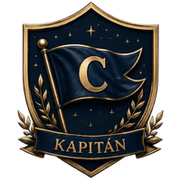
Kolej Havraspár založila kdysi v dávných dobách čarodějka Rowena z Havraspáru, jedna ze čtveřice zakladatelů Bradavic. Vznikla z přesvědčení, že magické nadání jde ruku v ruce s rozvíjeným rozumem, a že škola má vychovávat nejen silné, ale především moudré kouzelníky a kouzelnice.
Rowena byla známá svou nesmírnou inteligencí, zvídavostí a láskou k učení. Do své kolejní věže si proto vybírala studenty s bystrou myslí, touhou po vědění a schopností přemýšlet nad věcmi z více úhlů. Důležitá je jedině moudrost.
Věž Havraspáru se tyčí na jednom z nejvyšších míst hradu, odkud je výhled na celé okolní hory a hvězdnou oblohu. Vstup do ní hlídá klepadlo ve tvaru orla, který každému příchozímu položí hádanku či logickou otázku.
Dovnitř se dostane jen ten, kdo na hádanku odpoví správně. Špatná odpověď znamená pouze další, jinou hádanku. Tento systém má studenty učit přemýšlet, a ne pouze znát odpovědi nazpaměť.
Soupiska havraspárských hráčů, kteří bojují o Famfrpálový pohár v roce 2026:
Na začátku není potřeba řešit všechny vlastnosti své vysněné pozice. Nejdřív je dobré vybudovat základ, který využiješ prakticky kdekoliv na hřišti.
Prioritou každého nového hráče by měla být především obratnost a rychlost letu.
Jakmile se dostaneš přibližně na 20 obratnosti a 15 rychlosti, můžeš začít přidávat specializovaný trénink. Na rychlost a obratnost ale nezapomínej a postupně je dál navyšuj.
Pořadí tréninku: silný úder → přesnost odpalu → rychlost protiodpalu → kroucený odpal
Silný úder můžeš postupně dostat až na 25, není ale nutné trénovat pouze jej — klidně ho průběžně střídej například s přesností odpalu. Odrážeč potřebuje rychlost a obratnost, aby se vůbec dokázal k potlouku dostat. Potom přichází na řadu schopnost pořádně ho odpálit a poslat ho tam, kam potřebuje.
Pořadí tréninku: síla hodu → odebrání míče → přesnost hodu / udržení míče
Sílu hodu můžeš postupně trénovat až na 25 a zároveň ji prokládat třeba s odebráním míče. Střelec se musí nejprve dostat k soupeři, proto potřebuje rychlost a obratnost. Pak přichází souboj o camrál — musí ho umět získat a ideálně si ho také udržet. Síla a přesnost hodu mu následně pomáhají při samotném zakončení na bránu.
Pořadí tréninku (po obratnosti): bránění → odebrání míče → udržení míče → síla hodu
Obratnost mu pomáhá reagovat na střely a přesouvat se při bránění. Potřebuje ale také samotnou střelu zastavit, udržet získaný camrál nebo si ho případně vzít zpátky. Rychlost letu se hodí při přesunu mezi pozicemi, ale na rozdíl od ostatních hráčů nemusí být její maximální hodnota první prioritou.
Pro chytače jsou základní vlastnosti obzvlášť důležité. Potom pokračuj především: rozhled → postřeh — a nezapomeň ani na odolnost.
Chytač potřebuje být rychlý a obratný, protože se musí pohybovat za zlatonkou a soupeřit s druhým chytačem. Rozhled mu pomáhá při jejím hledání a postřeh následně ve chvíli, kdy ji potřebuje skutečně chytit.
Na odolnost by postupně měli myslet všichni hráči kromě brankáře. Hodí se především proto, že během zápasu můžeš schytat útok potloukem a potřebuješ na hřišti něco vydržet.
Pokud máš možnost, vyplatí se využívat kratší tréninky pravidelně během dne. Není ale potřeba hlídat hru každé dvě hodiny — každý odtrénovaný trénink se počítá.
| Intenzita | Energie | Doba |
|---|---|---|
| Velmi lehký | 15 % | 2 h |
| Lehký | 25 % | 3 h |
| Těžší | 40 % | 5 h |
| Těžký | 60 % | 8 h |
| Intenzivní | 80 % | 12 h |
Když si máš zapamatovat jen jednu věc:
Nejdřív obratnost + rychlost. Dostaň se alespoň na 20 obratnosti a 15 rychlosti, potom postupně přidávej vlastnosti své pozice a zároveň základní dvojici dotahuj co nejvýš.
Cílově: 42 obratnost + 24 rychlost (u brankáře stačí rychlost přibližně 16)
"XXX"
Moudří havrani, kteří momentálně obývají naši kolejní věž:
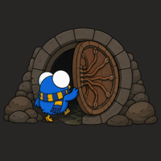
Kdovíkova výprava do komnatyVydej se hledat ukrytou tajemnou komnatu a odhal místo, které čeká jen na ty nejzvídavější studenty. Za nalezení komnaty a vstup do jejího tajemného prostoru můžeš získat safíry do svého safírového konta.
O tuto aktivitu se stará Angel de Fox.
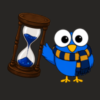
Kdovíkův školní pohárKaždý bod se počítá! Pomoz své koleji získávat body do školního poháru a přispěj k jejímu vítězství. Za svou aktivitu, úspěchy a nasbírané body můžeš získat safíry do svého safírového konta.
O tuto aktivitu se stará Mia Rose.
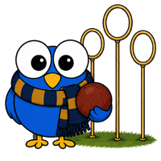
Létej s KdovíkemZlepšuj své schopnosti, piluj své dovednosti a staň se lepším hráčem pod Kdovíkovým dohledem. Za svou snahu, pravidelný trénink a pokroky můžeš získat safíry do svého safírového konta.
O tuto aktivitu se stará Mia Rose.
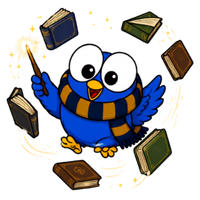
Moudrý KdovíkUkaž své znalosti v odborných učebnách, vyřeš zapeklité otázky a prokaž svou moudrost. Za správné odpovědi a úspěšné splnění vědomostních výzev můžeš získat safíry do svého safírového konta.
O tuto aktivitu se stará Shaunee von Castile a Mia Rose.
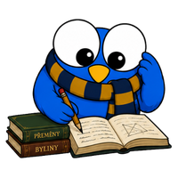
Zvídavý KdovíkKdovík se vydává na cestu poznání a zve tě do školních lavic, kde můžeš objevovat nová kouzla, vědomosti a dovednosti. Za každých 10+32 bodů získaných na hodinách ti přiletí safíry do tvého safírového konta.
O tuto aktivitu se stará Shaunee von Castile a Mia Rose.
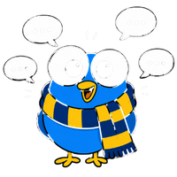
Ukrákaný KdovíkKdovík se rád rozpovídá, ale tentokrát je řada na tobě! Piš, diskutuj a přispívej do kolejní místnosti – čím více příspěvků nasbíráš, tím větší bude tvoje odměna. Za svou ukecanost můžeš získat safíry, to je jednoduché, ne?
Tuto aktivitu má na starosti Angel de Fox.
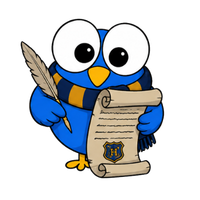
Kdovíkova otázka dneKaždý všední den se v kolejce objeví nová otázka od Kdovíka. Buď rychlý, odpověz správně jako první a můžeš získat safírovou i sladkou odměnu na své konto.
Tuto aktivitu má na starosti Shaunne von Castile.
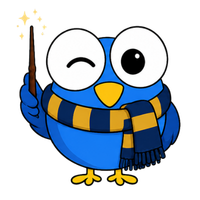
Kdovíkova víkendová výzvaKaždý víkend na tebe čeká speciální soutěž nebo úkol připravený Kdovíkem. Zapoj se, splň výzvu a můžeš získat extra safíry do svého safírového konta.
Tuto aktivitu má na starosti celé vedení Havraspáru.